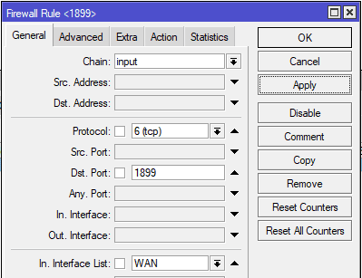
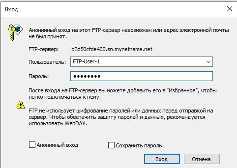
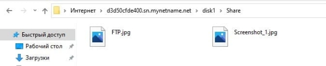
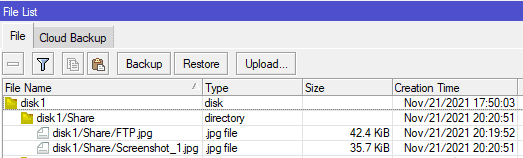

Налаштування FTP MikroTik, віддалений доступ до файлів
Короткий опис: інструкція з налаштування сервера FTP на роутері MikroTik . Віддалене підключення до мережі FTP .
FTP сервер — це сервер, який працює за протоколом File Transfer Protocol і призначений для обміну файлами через Інтернет чи локальну комп'ютерну мережу.

Налаштування FTP сервера в MikroTik
Як правило, розмірів внутрішньої пам'яті роутера MiktoTik буде недостатньо, тому попередньо слід встановити Usb накопичувач типу: HDD , SSD або flash drive .
Активація сервера FTP
Налаштування знаходиться IP→Services

/ip service
set ftp port=1899
Налаштування Firewall для FTP підключень
Налаштування знаходиться IP→Firewall

/ip firewall filter
add action=accept chain=input dst-port=1899 in-interface-list=WAN protocol=tcp
Наступний параметр визначає де буде запущено FTP сервер
- disabled – у локальній мережі (на якомусь сервері);
- enabled - на самому роутері MikroTik .

/ip firewall service-port
set ftp disabled=no ports=1899
Створення групи доступу, права FTP
Налаштування знаходиться System→Users→Groups

/user group
add name=FTP policy="ftp,web,!local,!telnet,!ssh,!reboot,read,write,!policy,\
!test,!winbox,!password,!sniff,!sensitive,!api,!romon,!dude,!tikapp"
Створення користувача FTP
Налаштування знаходиться System→Users

Підключення до MikroTik FTP
Підключення буде відбуватися з-під ПК з Windows . Для цього в адресному рядку буде введено адресу FTP сервера у форматі
ftp://IP_адреса_FTP_сервера:порт
Авторизація на FTP сервері

Записування файлу на FTP

Список файлів на сервері FTP
